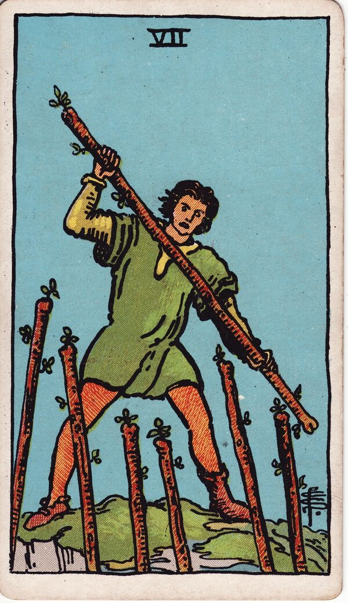

Minor Arcana · Suit of Wands
Seven of Wands Tarot Card Meaning
The Seven of Wands is holding the high ground — defending what you've built against challenge. Want to know what it means in your spread? Every reader on our line is hand-vetted — connect in under 60 seconds, $1 for your first minute, hang up anytime.
- Hand-vetted readers
- Available 24/7
- Hang up anytime

Seven of Wands — What It Shows
A figure stands on higher ground, wand raised, fending off six wands rising from below. He has the advantage of position — but he's outnumbered and has to keep defending. After the Six's public win, the Seven is what comes next: holding onto it. Success attracts challengers, and now you have to prove you can keep what you earned.
Seven of Wands Upright Meaning
Upright, the Seven of Wands is standing your ground. You're being challenged — your position, your beliefs, your success — and the card says you can hold it, but only if you keep showing up and defending it. It's perseverance under pressure, conviction, and refusing to be pushed off the hill.
Seven of Wands Reversed Meaning
Reversed, the defence is failing or unnecessary. Overwhelm, burnout from constant fighting, giving up the position, or being defensive when no one is actually attacking. It can be a cue to either fully commit or stop fighting a battle that isn't yours.
Seven of Wands in Love & Relationships
In love, the Seven of Wands is defending a connection or a boundary — protecting a relationship from outside pressure, fighting for someone, or holding firm on a non-negotiable need. Example: a caller facing family disapproval of their partner drew this card; the read affirmed the relationship is worth defending, but warned against becoming so defensive that the fight itself damages it.
Seven of Wands in Career & Money
For work it's defending your role, ideas, or territory against competition or criticism. Example: someone whose project was being second-guessed pulled this card; the message was to stand firm with evidence and conviction — the position is defensible, but passivity will lose it.
Seven of Wands as Advice
As advice: hold your ground. Decide what's worth defending, commit to it fully, and don't waste energy on attacks that don't matter — but don't fold on the ones that do.
What People Ask About the Seven of Wands
Common questions readers hear about this card:
"Does it mean someone is against me?"
Often it's challenge or competition — not always a person, sometimes circumstances.
"Should I keep fighting?"
Upright says yes, you can win it; reversed asks if it's worth the cost.
"Seven of Wands as feelings?"
Defensive, guarded, or 'I have to protect myself here.'
"Is it a love-triangle card?"
It can be — defending a connection against a rival or interference.
Seven of Wands — Yes or No?
A conditional yes — yes if you stand firm and keep defending; the outcome is winnable but not effortless. Reversed leans no, or "only if you stop fighting the wrong battle."
Seven of Wands Reversed in Love & Career
Reversed, the Seven of Wands reads differently by area. In love, it can mean you're exhausted from constantly defending a relationship (or a boundary) and considering whether it's still worth the fight — or that you've become so defensive you're pushing away people who weren't actually attacking. Overwhelm and giving up the position both live here. In career, reversed it's burnout from territorial battles, caving under pressure, or feeling outnumbered and ready to stop arguing your case. The reversed Seven's honest question is which battles deserve your remaining energy and which you're fighting out of habit. A live reader can help you tell a boundary worth holding from a hill not worth dying on.
Seven of Wands Timing in a Reading
Timing is the least precise thing tarot does, so read this as a lean rather than a date. The Seven of Wands describes an ongoing stand rather than a single moment — readers usually frame it as active now and continuing for days to weeks, lasting as long as you keep holding the position. It resolves when you either commit fully or step out. Reversed, the fight either ends or you're worn down by it. A live reader reads duration from the surrounding cards and your situation.
Seven of Wands Card Combinations
Context changes everything — a few pairings readers see often:
Seven of Wands + Five of Wands
An active conflict you'll have to defend your ground in.
Seven of Wands + Strength
Holding firm through calm conviction rather than force.
Seven of Wands + Ten of Wands
Defending so long it becomes a draining, unsustainable burden.
Seven of Wands in a Tarot Reading
A meanings page is the map; a live reading is the territory. The Seven of Wands shifts with its position and the cards around it — which is what a hand-vetted reader interprets for your question. See the full Suit of Wands, all 56 cards on the Minor Arcana hub, or start a phone tarot reading.
← Six of Wands · Next: Eight of Wands →
What Does the Seven of Wands Mean for You?
A meanings list is the map; a live reading is the territory. We'll connect you with the right hand-vetted tarot reader in under 60 seconds. $1/min first call · 15 minutes for $10 · hang up anytime · 100% satisfaction promise.
Call (888) 920-6662 NowSeven of Wands — Frequently Asked Questions
What does the Seven of Wands mean?
Standing your ground — defending your position, beliefs, or success against challenge.
What does it mean reversed?
Overwhelm, giving up the fight, burnout, or being needlessly defensive.
What does the Seven of Wands mean in love?
Defending a relationship or boundary, or fighting for a connection under pressure.
Is it a yes or no card?
A conditional yes — yes if you stand firm and keep defending.
How much does a reading cost?
First-time callers pay $1/min, or 15 minutes for $10, and you can hang up anytime.
Get Your Tarot Reading Now
Connected to a hand-vetted reader in under 60 seconds, the cards pulled on your real question, and you hang up with clarity.
Call (888) 920-6662